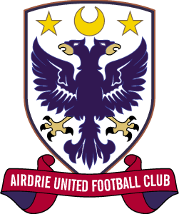

web counter
Welcome
to the Airdrieonians & Airdrie United Football Club
Results Archive

| Airdrie Supporters Trust | Airdrie Book Info
Click on a year to view Airdries results for that season
| Seasons | Division | Position | Scottish_Cup | The_League_Cup | Top_League_Scorer | Goals | AveLeagueAtt |
| 2022-23 | Tier3 | 3rd | - | League Stage 2/5 | Calum GALLACHER | 3 | 1872 |
| 2021-22 | Tier3 | 2nd | 4th Round | League Stage 4/5 | C GALLACHER | 15 | ? |
| 2020-21 | Tier3 | 2nd | 3rd Round | League Stage 4/5 | D.CARRICK | 9(4P) | 500 |
| 2019-20 | Tier3 | 3th | 4th Round | League Stage(3rd) | Dale CARRICK | 12 | 1037 |
| 2018-19 | Tier3 | 5th | 4th Round | League Stage(3rd) | Leighton McINTOSH | 14 | 764 |
| 2017-18 | Tier3 | 7th | 3rd Round | League Stage(4th) | Willis FURTADO | 6 | 768 |
| 2016-17 | Tier3 | 3rd | 3rd Round | League Stage(3rd) | Andy RYAN | 23 | 828 |
| 2015-16 | Tier3 | 5th | 4th Round | 2nd Round | Jim LISTER | 8 | 851 |
| 2014-15 | Tier3 | 5th | 3rd Round | 1st Round | Bryan PRUNTY | 14 | 828 |
| 2013-14 | Second | 6th | 3rd Round | 2nd Round | Jim LISTER | 10 | 1537 |
| Seasons | Division | Position | Scottish_Cup | The_League_Cup | Top_League_Scorer | Goals | AveLeagueAtt |
| 2012-13 | First | 10th | 3rd Round | 1st Round | John BOYLE | 9 | 933 |
| 2011-12 | Second | 4th | 4th Round | Last_16 | Ryan DONNELLY | 21 | 833 |
| 2010-11 | Second | 6th | 4th Round | 2nd Round | Scott GEMMELL | 9 | 788 |
| 2009-10 | First | 9th | 4th Round | 1st Round | John BAIRD | 11 | 1080 |
| 2008-09 | First | 9th | Last_16 | 3rd Round | Simon LYNCH | 10 | 1347 |
| 2007-08 | Second | 2nd | 4th Round | 1st Round | Alan RUSSELL | 19 | 981 |
| 2006-07 | First | 9th | 3rd Round | 2nd Round | Gary TWIGG | 11 | 1425 |
| 2005-06 | First | 6th | Last 16 | 1st Round | Bryan PRUNTY | 15 | 1426 |
| 2004-05 | First | 5th | 3rd Round | 2nd Round | Owen COYLE | 14 | 2013 |
| 2003-04 | Second | 1st | 3rd Round | 2nd Round | Owen COYLE | 13 | 1857 |
| 2002-03 | Second | 3rd | 3rd Round | 3rd Round | Jerome VAREILLE | 18 | 1437 |
Read how Airdrieonians became Airdrie United on 01 July 2002
| Spring_Cup_Winners_1976 |
| Scottish_Cup_Run_1975 |
| Texaco_Cup_Run_1972 |
| Scottish_Cup_Winners_1924 |
* All games played away from home in this season
You are visitor number
since 8 Feb 2000